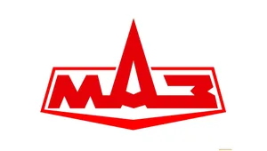

Самый частый ремонт
7–14 дней
Ремонт двигателей
Капремонт и текущий ремонт двигателей КАМАЗ, МАЗ, ЯМЗ, Cummins, Volvo. Ремонт ГБЦ, блока цилиндров, коленвала. Стендовая обкатка после капремонта.
РемСД — официальный сервис КАМАЗ, МАЗ, УРАЛ
РемСД выполняет диагностику, техническое обслуживание и ремонт двигателей, КПП, ходовой, электрики грузовых автомобилей и спецтехники. Сервисный центр работает с юридическими лицами по безналичному расчёту. База в Сургуте, приём техники из ХМАО.
Официальный сервис
РемСД работает как официальный сервисный центр КАМАЗ, МАЗ и УРАЛ. Сервис выполняет гарантийный и постгарантийный ремонт грузовых автомобилей. Ремонтная база находится в Сургуте по адресу: ул. Производственная, 36.

РемСД ремонтирует двигатели КАМАЗ-740, КАМАЗ-910, головки блока цилиндров (ГБЦ), коробки передач (КПП), электрику, топливную систему, ходовую часть, тормоза и гидравлику КАМАЗ.
Ремонт КАМАЗ в Сургуте → Официальный сервис
РемСД выполняет диагностику и ремонт двигателей ЯМЗ-536, ЯМЗ-7511, трансмиссии, тормозной системы, электрики, системы охлаждения и техническое обслуживание (ТО) для МАЗ.
Ремонт МАЗ в Сургуте → Официальный сервис
РемСД ремонтирует двигатель, раздаточную коробку (раздатку), мосты, ходовую часть, тормоза, электрику, гидравлику и обслуживает шасси УРАЛ для работы в условиях ХМАО.
Ремонт УРАЛ в Сургуте →Перечень услуг
РемСД выполняет диагностику, техническое обслуживание и ремонт грузовых автомобилей и спецтехники импортного и отечественного производства. Работаем с юридическими лицами по договору. Стоимость фиксируется до начала работ.
Капремонт и текущий ремонт двигателей КАМАЗ, МАЗ, ЯМЗ, Cummins, Volvo. Ремонт ГБЦ, блока цилиндров, коленвала. Стендовая обкатка после капремонта.
Ремонт механических и автоматических коробок передач МАЗ, КАМАЗ, Volvo, Scania. Восстановление раздаток, замена подшипников и синхронизаторов.
Полный спектр работ по подвеске, мостам и рулевому управлению грузовиков. Замена рессор, амортизаторов, шкворней, поворотных кулаков.
Все услуги:
Сейчас на ремонте: 4 единицы техники
Последний выданный ремонт: сегодня, 14:30 — КАМАЗ-740
Приём в ремонт
РемСД работает с юридическими лицами по договору. Процесс ремонта прозрачен: вы видите все этапы и стоимость до начала работ. Стоимость фиксируется до начала ремонта.
Вы звоните по телефону +7 (3462) 26-05-04. РемСД уточняет марку, модель, описывает неисправность. Первичная консультация бесплатна.
5-15 минутГрузовик поступает на сервис. РемСД выполняет комплексную диагностику: компьютерную, стендовую, визуальную. Формируется дефектовочная карта.
1-2 рабочих дняРемСД направляет дефектовочную карту и смету. Вы согласовываете объём работ. Оригинальные запчасти заказываются со склада или у поставщиков.
1-3 рабочих дняРемСД выполняет ремонт в соответствии с регламентом. Для капремонта двигателя и КПП — стендовая обкатка. Для электрики — проверка на диагностическом оборудовании.
от 1 до 14 рабочих днейВы принимаете работу. РемСД выдаёт акт выполненных работ, гарантийный талон. Гарантия на капремонт — 6 месяцев.
1-2 часаПреимущества
РемСД работает с 2008 года. 17 лет опыта в ремонте грузовиков и спецтехники в условиях ХМАО и Югры. Сервис оснащён современным оборудованием для диагностики и ремонта.
РемСД обслуживает КАМАЗ, МАЗ, УРАЛ, Volvo, JCB, Scania, MAN, Mercedes-Benz, Komatsu и другие. Всего 13 брендов.
РемСД выполняет ремонт двигателей, КПП, ходовой, электрики, гидравлики, топливной системы, охлаждения, SCR/AdBlue.
РемСД предоставляет гарантию 6 месяцев на капремонт двигателя и КПП, 3 месяца на текущий ремонт.
РемСД работает с юридическими лицами по безналичному расчёту с НДС. Для постоянных клиентов — отсрочка платежа до 30 дней.
Приёмка техники — с 8:00 до 20:00. Для постоянных клиентов — круглосуточная поддержка по телефону.
РемСД направляет дефектовочную карту и смету до начала работ. Стоимость фиксируется до начала ремонта.
Вопросы клиентов
Ответы на вопросы, которые уточняют перед передачей техники на базу РемСД в Сургуте.
РемСД не называет фиксированную цену без диагностики. Стоимость зависит от модели двигателя, объёма работ, состояния агрегата. Ориентировочно: диагностика ДВС — от 3000 ₽, текущий ремонт — от 15 000 ₽, капремонт — от 120 000 ₽. Точную стоимость РемСД определяет после дефектации.
РемСД работает по безналичному расчёту с НДС. Для постоянных клиентов возможна отсрочка платежа до 30 дней.
РемСД выполняет ремонт КПП МАЗ за 3-5 рабочих дней для текущего ремонта, за 7-14 рабочих дней для капремонта. Если нужна замена КПП на контрактную — срок увеличивается до 5-10 рабочих дней.
Диагностика КПП на стенде занимает 1-2 рабочих дня.
РемСД предоставляет гарантию 6 месяцев на капремонт двигателя и КПП, 3 месяца на текущий ремонт и запасные части, 12 месяцев на новые оригинальные запчасти. Гарантия действует при соблюдении условий эксплуатации и своевременного ТО.
Да, основной формат работы РемСД — обслуживание юридических лиц по договору. Компании Сургута и ХМАО заключают договор на разовое обслуживание или абонентское обслуживание автопарка. РемСД выставляет счета с НДС.
Да, РемСД оказывает услугу выездного ремонта в пределах ХМАО. Бригада выезжает со своим инструментом и расходными материалами для мелкого и среднего ремонта: замена РВД, устранение утечек, замена фильтров, диагностика. Для сложного ремонта техника эвакуируется на сервис.
Да, РемСД ремонтирует европейские грузовики: Volvo FH/FM, Scania R/G/P-series, MAN TGS/TGX/TGM, Mercedes-Benz Actros, DAF XF/CF. Диагностика выполняется на дилерском оборудовании. Запасные части заказываются у официальных поставщиков.
Записаться можно по телефону +7 (3462) 26-05-04 с 8:00 до 20:00. При звонке сообщите марку и модель грузовика, опишите неисправность. РемСД подберёт удобное время и сообщит перечень документов для приёмки.
Да, РемСД ремонтирует системы нейтрализации отработавших газов AdBlue/SCR для грузовиков Euro 5 и Euro 6. Работаем с блоками дозирования, клапанами SCR, датчиками NOx. Диагностика выполняется на специализированном оборудовании.
География работ
РемСД находится в Сургуте и обслуживает компании по всему Ханты-Мансийскому автономному округу. Базовый сервис — в Сургуте, выездной ремонт — по всему региону.
Отдельное направление
РемСД отдельно занимается арендой спецтехники для строительных, дорожных и промышленных работ в Сургуте и ХМАО. Аренда подходит компаниям, которым требуется техника на период проекта без необходимости её обслуживания.
Связаться с сервисом
Позвоните мастеру: назовите марку техники, проблемный узел и задачу. Мастер подскажет, как передать технику на базу в Сургуте. Первичная консультация бесплатна.
РемСД — официальный сервис КАМАЗ, МАЗ, УРАЛ в Сургуте